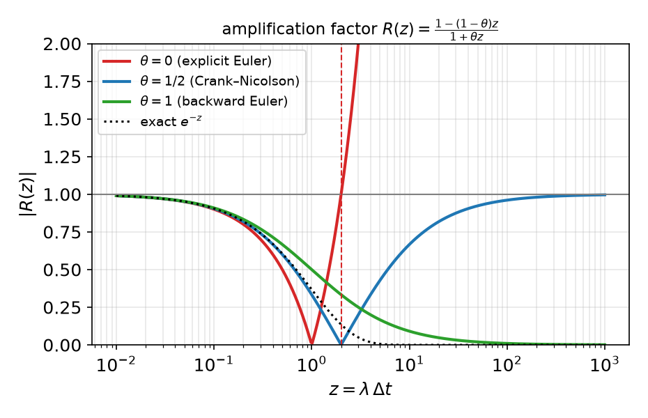
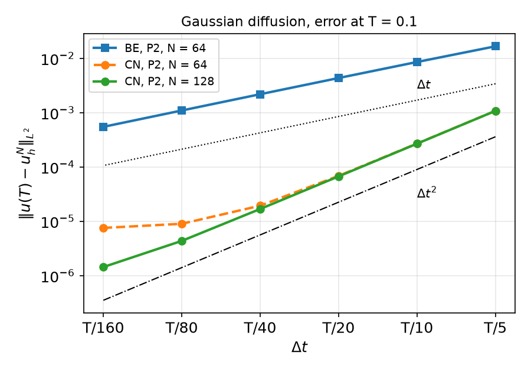
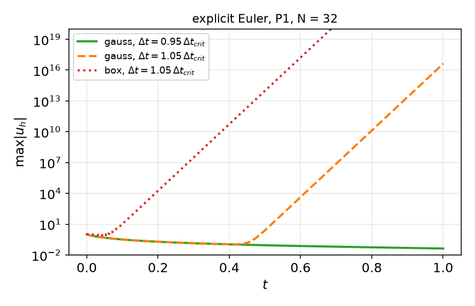
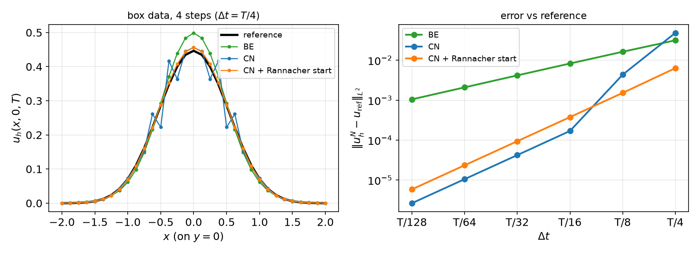
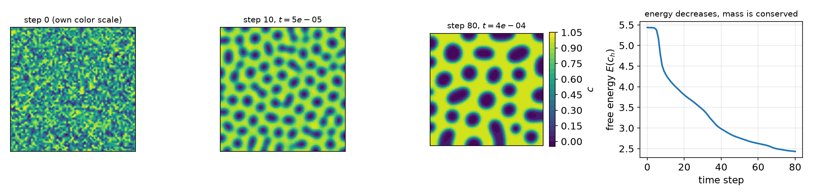

AI-based Materials and Process Simulation I
Week 10 — Time-Dependent Problems: Semi-discretization · θ-Method · Stability · Space–Time Convergence · Cahn–Hilliard
Process Systems Laboratory
Department of Chemical and Biomolecular Engineering, SeoulTech
Today
| Part | Topic | Time |
|---|---|---|
| Quiz | Week 9 (Kirchhoff, SNES reasons, folds, parameters, tolerances) | 10 min |
| A | Theory — method of lines, energy stability, semi-discrete error, the θ-method, amplification factors, space–time error | 50 min |
| B | The heat equation in DOLFINx — one matrix, many right-hand sides; Gaussian benchmark; temporal rates | 40 min |
| C | Stability in practice — explicit Euler, non-smooth data, Crank–Nicolson oscillations, Rannacher start | 30 min |
| D | Cahn–Hilliard (θ-method + Newton) · LLM pitfalls in time loops · HW9 | 30 min |
Lab notebook: W10_lab.ipynb · Homework: W10_HW9.ipynb (due before Week 11)
Where we are
Weeks 1–7: elliptic, linear. Weeks 8–9: elliptic, nonlinear. Now: parabolic — the process models that evolve in time.
| Process | Model |
|---|---|
| transient conduction, quenching | \rho c_p T_t-\nabla\cdot(k\nabla T)=Q |
| diffusion in a membrane / catalyst pellet | c_t-\nabla\cdot(D\nabla c)=r(c) |
| phase separation (spinodal decomposition) | Cahn–Hilliard: c_t=\nabla\cdot(M\nabla\mu), \mu=f'(c)-\lambda\Delta c |
| start-up flow | \rho\mathbf u_t-\mu\Delta\mathbf u+\nabla p=\mathbf f (Week 14) |
Strategy: discretize space first (FEM, Weeks 1–7) → a system of ODEs → discretize time (θ-method) → at each step an elliptic problem (linear: Weeks 5–6; nonlinear: Weeks 8–9).
Part A — Theory
§A1 Weak form and the method of lines
u_t-\kappa\Delta u=f\ \text{ in }\Omega\times(0,T],\qquad u=g\ \text{ on }\partial\Omega,\qquad u(\cdot,0)=u_0 .
Weak form: for a.e. t, find u(t)\in H^1, u=g(t) on \partial\Omega, with (u_t,v)+\kappa(\nabla u,\nabla v)=(f(t),v)\qquad\forall v\in H^1_0 .
Semi-discretization (Galerkin in space, u_h(x,t)=\sum_jU_j(t)\phi_j(x)): M\,\dot U(t)+K\,U(t)=F(t),\qquad M_{ij}=(\phi_j,\phi_i),\ \ K_{ij}=\kappa(\nabla\phi_j,\nabla\phi_i). A stiff ODE system: the generalized eigenvalues K\varphi=\lambda M\varphi range from \lambda_{\min}=O(1) to \lambda_{\max}=O(h^{-2}).
§A2 Energy stability
Energy estimate (homogeneous Dirichlet data)
Take v=u: \ \tfrac12\tfrac{d}{dt}\|u\|^2+\kappa\|\nabla u\|^2=(f,u). With Poincaré, \|v\|\le C_P\|\nabla v\|: \|u(t)\|\le e^{-\kappa t/C_P^2}\|u_0\|+\int_0^t e^{-\kappa(t-s)/C_P^2}\|f(s)\|\,ds .
- The same argument with v=u_h\in V_h gives the same bound for the semi-discrete solution, for every h: Galerkin in space is stable.
- Without data (f=0) the energy only decreases; high-frequency components decay fastest (e^{-\lambda t}, \lambda\sim h^{-2}).
- A time-stepping scheme should inherit this. Whether it does is the question of §A4–A5.
§A3 Semi-discrete error: the Ritz-projection trick
Ritz projection R_h:H^1_0\to V_h: (\nabla R_hu,\nabla v)=(\nabla u,\nabla v) for v\in V_h — the elliptic Galerkin solution, so \|u-R_hu\|\le Ch^{k+1}|u|_{k+1} (Weeks 5–7).
Split u-u_h=\underbrace{(u-R_hu)}_{\rho}+\underbrace{(R_hu-u_h)}_{\vartheta\in V_h}. Subtracting the equations: (\vartheta_t,v)+\kappa(\nabla\vartheta,\nabla v)=-(\rho_t,v)\qquad\forall v\in V_h, and the energy estimate for \vartheta gives \|\vartheta(t)\|\le\|\vartheta(0)\|+\int_0^t\|\rho_t\|\,ds.
Theorem (Wheeler 1973)
\|u(t)-u_h(t)\|\le\|u_h(0)-u_0\|+Ch^{k+1}\Bigl(\|u_0\|_{k+1}+\int_0^t\|u_t\|_{k+1}\,ds\Bigr).
Optimal O(h^{k+1}) in L^2 — provided u_h(0) is O(h^{k+1})-close to u_0 (interpolant or L^2/Ritz projection) and u_t is smooth.
§A4 The θ-method
M\frac{U^{n+1}-U^n}{\Delta t}+K\bigl(\theta U^{n+1}+(1-\theta)U^n\bigr)=\theta F^{n+1}+(1-\theta)F^n
| θ | name | order p |
|---|---|---|
| 0 | explicit (forward) Euler | 1 |
| ½ | Crank–Nicolson | 2 |
| 1 | implicit (backward) Euler | 1 |
Each step solves (M+\theta\Delta tK)\,U^{n+1}=\text{rhs}: an elliptic problem with a constant matrix (if \Delta t, θ fixed) — factorize once.
Modal analysis: in an eigenvector K\varphi=\lambda M\varphi (with F=0) one step multiplies by R(z)=\frac{1-(1-\theta)z}{1+\theta z},\qquad z=\lambda\Delta t .

§A5 Stability: A-stability, L-stability, the explicit limit
Stable iff |R(\lambda\Delta t)|\le1 for all \lambda\in[\lambda_{\min},\lambda_{\max}]:
Stability of the θ-method
- \theta\ge\frac12: |R(z)|\le1 for all z\ge0 — unconditionally stable (A-stable).
- \theta<\frac12: stable iff \Delta t\le\dfrac{2}{(1-2\theta)\lambda_{\max}}, and \lambda_{\max}\approx C/h^2 ⇒ \Delta t=O(h^2).
| R(\infty) | stiff (high-frequency) components | |
|---|---|---|
| backward Euler | 0 | damped at once (L-stable) |
| Crank–Nicolson | −1 | not damped: flip sign every step (§C2) |
| explicit Euler | -\infty | amplified unless \Delta t\lambda_{\max}\le2 |
Measured, P1 on (-2,2)^2, right triangles: \lambda_{\max}h^2=23.8,\ 25.3,\ 25.7 (N=8,16,32); with a lumped (diagonal) mass 8.2. At h=0.125: \Delta t_{\rm crit}=2/\lambda_{\max}=1.2\times10^{-3}, while \lambda_{\min}=1.24 sets the physical time scale ≈ 0.8.
§A6 Fully discrete error and the balance of h and \Delta t
Error of the θ-method (smooth solution)
\|u(t_n)-u_h^n\|\le C\bigl(h^{k+1}+\Delta t^{\,p}\bigr),\qquad p=2\ (\theta=\tfrac12),\quad p=1\ (\text{otherwise}).
- Temporal rate: fix a fine mesh, halve \Delta t → ratio 2^p — until h^{k+1} (the spatial floor) dominates.
- Spatial rate: fix a tiny \Delta t, refine h → ratio 2^{k+1}.
- Joint refinement: \Delta t\sim h^{(k+1)/p} keeps both parts balanced; e.g. P1 + CN: \Delta t\sim h; P1 + backward Euler: \Delta t\sim h^2.
- p=2 needs all data at consistent times: \theta f^{n+1}+(1-\theta)f^n (or f at t_{n+\theta}), boundary data at t_{n+1}, and smooth (compatible) data. Otherwise: order reduction (HW9).
Part B — The Heat Equation in DOLFINx
§B1 One matrix, many right-hand sides
t, dt, theta = fem.Constant(msh, 0.0), fem.Constant(msh, dt_value), fem.Constant(msh, 1.0)
u_n = fem.Function(V); u_n.interpolate(u0) # previous step (initial condition)
g = fem.Function(V); g_expr = fem.Expression(u_exact(t), V.element.interpolation_points)
bc = fem.dirichletbc(g, boundary_dofs)
u, v = ufl.TrialFunction(V), ufl.TestFunction(V)
a = fem.form(u * v * ufl.dx + dt * theta * kappa * ufl.inner(ufl.grad(u), ufl.grad(v)) * ufl.dx)
L = fem.form(u_n * v * ufl.dx - dt * (1 - theta) * kappa * ufl.inner(ufl.grad(u_n), ufl.grad(v)) * ufl.dx
+ dt * (theta * f_new + (1 - theta) * f_old) * v * ufl.dx)
A = assemble_matrix(a, bcs=[bc]); A.assemble() # once
ksp = PETSc.KSP().create(comm); ksp.setOperators(A); ksp.setType("preonly"); ksp.getPC().setType("lu") # factorized once
for n in range(1, nsteps + 1): # integer counter: t_n = n * dt
t.value = n * dt_value
g.interpolate(g_expr) # boundary data at t_{n+1}
with b.localForm() as bl: bl.set(0.0)
assemble_vector(b, L); apply_lifting(b, [a], [[bc]])
b.ghostUpdate(addv=PETSc.InsertMode.ADD, mode=PETSc.ScatterMode.REVERSE); set_bc(b, [bc])
ksp.solve(b, uh.x.petsc_vec); uh.x.scatter_forward()
u_n.x.array[:] = uh.x.array # copy values — do not rebind the name§B2 Math → code
| Mathematics | DOLFINx 0.11 |
|---|---|
| t_n, \Delta t, θ | fem.Constant — read at every assembly; change .value, never rebuild forms |
| u^n in the right-hand side | a fem.Function u_n inside L; update with u_n.x.array[:] = uh.x.array |
| M+\theta\Delta tK | a, assembled and factorized once (re-assemble only if \Delta t, θ or coefficients change) |
| g(t_{n+1}) | g.interpolate(fem.Expression(u_exact(t), ...)) after t.value = ... |
| \theta f^{n+1}+(1-\theta)f^n | two Constants t_old, t_new in UFL; \partial_t u for MMS by ufl.diff(u_ex, ufl.variable(t)) |
| \|u(T)-u_h^N\| | assemble_scalar + allreduce with the exact solution at the same t |
Loop over an integer n and set t_n=n\Delta t: while t < T: t += dt accumulates rounding — with \Delta t=0.1 it takes 11 steps to pass T=1.
§B3 A benchmark with an exact solution: Gaussian diffusion
In \mathbb R^2 with \kappa=1: u(x,y,t)=\frac{1}{1+4at}\exp\Bigl(-\frac{a(x^2+y^2)}{1+4at}\Bigr)\quad\text{solves}\quad u_t=\Delta u,\quad u(\cdot,0)=e^{-a(x^2+y^2)}.
- On \Omega=(-2,2)^2 impose its own values on \partial\Omega (time-dependent Dirichlet data): then it is the exact solution on \Omega too — no truncation error from the finite domain.
- a=5, T=0.1: the peak drops from 1 to 1/3 and the width grows by \sqrt3.
- P2 on N\times N squares split into triangles; error \|u(T)-u_h^N\|_{L^2}.
§B4 Temporal convergence

Rates, \Delta t=T/5\to T/160:
| rates | |
|---|---|
| BE, N=64 | 0.96, 0.98, 0.99, 1.00, 1.00 |
| CN, N=64 | 2.00, 1.97, 1.83, 1.10, 0.25 |
| CN, N=128 | 2.01, 2.00, 1.99, 1.95, 1.60 |
- BE: first order, 5.5\times10^{-4} at T/160.
- CN: second order until the spatial floor (\approx7.5\times10^{-6} for P2, N=64). Refining the mesh lowers the floor and restores the rate.
- CN with 10 steps (2.7\times10^{-4}) beats BE with 160.
Reading a temporal study: a rate that falls as \Delta t\to0 means “another error dominates now” — check by refining h, not by trusting the last digit.
Part C — Stability in Practice
§C1 Explicit Euler: the limit is real — and can hide
\Delta t_{\rm crit}=2/\lambda_{\max} from the dense eigenvalues (P1, N=32, h=0.125): 1.216\times10^{-3}.

\max|u_h| at t=0.1,\ 0.2,\ 0.5,\ 1:
| data, \Delta t | |
|---|---|
| Gaussian, 0.95\,\Delta t_{\rm crit} | 0.33, 0.20, 0.090, 0.043 |
| Gaussian, 1.05\,\Delta t_{\rm crit} | 0.33, 0.20, ≈ 3, ≈ 5e16 |
| box, 1.05\,\Delta t_{\rm crit} | 11, 1.9e4, 9.9e13, 1.7e30 |
Smooth data contain almost no highest mode — the instability grows from round-off and looks fine for a while (here until t\approx0.4); the exploded values even differ between machines (local 2.8 / 4.6e16, Colab 2.9 / 4.7e16): they are amplified rounding errors. A short test run does not prove stability. Implicit methods remove the limit; explicit ones need \Delta t=O(h^2) — for diffusion almost always the wrong trade.
§C2 Non-smooth data: Crank–Nicolson oscillates
Indicator of (-\frac12,\frac12)^2 as u_0, u=0 on \partial\Omega, P1, N=32, T=0.1; reference: Rannacher-started CN with 4096 steps.

| errors, \Delta t=T/4\to T/128 | rates | |
|---|---|---|
| BE | 3.1e-2 … 1.05e-3 | 0.95 … 1.00 |
| CN | 4.8e-2, 4.3e-3, 1.7e-4 … 2.6e-6 | 3.47, 4.68, 2.01, 2.00, 2.00 |
| CN + Rannacher (4 BE half steps first) | 6.3e-3 … 5.9e-6 | 2.06, 2.01, 2.00, 2.00, 2.00 |
§C3 Why — and what to do
- The jump excites high-frequency modes; CN multiplies them by R(\lambda\Delta t)\approx-1 each step: they flip sign and do not decay (left figure: wiggles at the edges of the box). With \Delta t=T/4 CN is worse than BE.
- Once \Delta t is small enough that those modes have \lambda\Delta t\lesssim1, CN is second order again — but only asymptotically.
- Rannacher start: a few L-stable steps (backward Euler, half step size) damp the stiff components, then CN: second order from the start.
Positivity. The exact solution is \ge0. Measured \min u_h over all steps: BE -7\times10^{-4} at \Delta t=T/16, -1.6\times10^{-2} at T/128; CN down to -2.7\times10^{-2}. With a consistent mass matrix even backward Euler violates the maximum principle when \Delta t is small compared with h^2 (a known lower bound); mass lumping on acute meshes restores it. Concentrations and temperatures that go negative are a discretization artifact, not physics.
Part D — Cahn–Hilliard · LLMs · HW9
§D1 Cahn–Hilliard: time stepping + Newton
Phase separation of a binary mixture, concentration c, chemical potential \mu: c_t=\nabla\cdot(M\nabla\mu),\qquad \mu=f'(c)-\lambda\Delta c,\qquad f(c)=100\,c^2(1-c)^2 .
Mixed P1 × P1 for (c,\mu), θ = ½ on the \mu term, NonlinearProblem (Week 9) at every step:
c, mu = ufl.split(u); c0, mu0 = ufl.split(u0)
cv = ufl.variable(c); f = 100 * cv**2 * (1 - cv)**2
mu_mid = (1 - theta) * mu0 + theta * mu
F = (c - c0) * q * dx + dt * inner(grad(mu_mid), grad(q)) * dx \
+ (mu - ufl.diff(f, cv)) * v * dx - lmbda * inner(grad(c), grad(v)) * dx
for n in range(nsteps):
u0.x.array[:] = u.x.array
problem.solve(); assert problem.solver.getConvergedReason() > 064\times64, \lambda=10^{-2}, \Delta t=5\times10^{-6}, 80 steps, c_0=0.63\pm0.01:
- free energy 5.435\to4.296 (10 steps) \to2.433 (80 steps), monotone;
- mass \int c=0.63003623 at every step (to 8 digits);
- 2–5 Newton iterations per step.
Checks with a known answer even without an exact solution: energy decay, mass conservation, -np 1 vs -np 2.
§D1 Cahn–Hilliard: spinodal decomposition and coarsening

- Fast separation into c\approx0 and c\approx1 (steps 0–10), then slow coarsening: small droplets disappear, the interface length and the energy drop.
- c slightly outside [0,1] (-0.036\dots1.016): no maximum principle for a fourth-order equation — not a bug.
- Each step: a nonlinear system (SNES) for (c^{n+1},\mu^{n+1}). Same checks as Week 9: reason >0 at every step, Newton iteration counts.
§D2 Where LLM-generated time loops go wrong
| Kind | What it looks like | Symptom |
|---|---|---|
| Rebinding | u_n = uh at the end of the step |
the form still holds the old u_n object: every step restarts from u_0 |
Time as float |
t = 0.0 inside f or g, then t += dt |
data frozen at t=0 (Week 9’s lam bug, again) |
| Stale boundary data | g.interpolate(...) once, before the loop |
boundary values stay at t=0 — invisible to the Gaussian benchmark (<10^{-3} on \partial\Omega: error 5.2\times10^{-3} with or without the bug); test with an MMS whose boundary data change |
| Float loop | while t < T: t += dt |
one extra step (11 instead of 10 for \Delta t=0.1) |
| Data at the wrong time | f(t_n) or f(t_{n+1}) in Crank–Nicolson | first order instead of second (HW9) |
| Cost | LinearProblem(...) or fem.form(...) inside the loop |
re-assembly and re-factorization of a constant matrix every step |
| Error at the wrong time | exact solution at t_n compared with u_h^{n+1} | an O(\Delta t) error floor |
Verification habit: print the step count and the final t; check that u_h changes from step to step; temporal and spatial rates; -np 2.
HW9 — temporal convergence rates, due before the Week 11 lecture
W10_HW9.ipynb (100 pts)
- Q1 (20) Theory: amplification factor and the stability limit of the θ-method; \lambda_{\max} for P1 in 1D; energy stability of backward Euler
- Q2 (40) A θ-method solver with an MMS, time-dependent boundary data: temporal rates for BE/CN, joint space–time refinement, order reduction
- Q3 (20) Explicit Euler: \lambda_{\max}, \Delta t_{\rm crit} and its h^2 scaling, measured
- Q4 (20) LLM debugging: a heat solver with four bugs
Rules as always: Restart session and run all, -np 2 where stated, the AI-usage log, numbers only from your own cells.
For every rate: prediction first, then measurement, then explanation.
Summary
| Concept | Key idea | DOLFINx |
|---|---|---|
| Method of lines | M\dot U+KU=F, stiff: \lambda_{\max}\sim h^{-2} | mass and stiffness forms |
| Semi-discrete error | Ritz projection: O(h^{k+1}) if u_h(0) is good | interpolate u_0 |
| θ-method | R(z)=\frac{1-(1-\theta)z}{1+\theta z}; θ ≥ ½ A-stable; BE L-stable | Constant dt, θ; factorize once |
| Explicit limit | \Delta t\le2/\lambda_{\max}=O(h^2), may hide for smooth data | — |
| Space–time error | O(h^{k+1}+\Delta t^p); data at consistent times | t_old, t_new Constants |
| Non-smooth data | CN oscillates; Rannacher start | a few BE half steps |
| Nonlinear in time | θ-method + Newton per step; energy, mass checks | NonlinearProblem in the loop |
Next week — Stokes: mixed problems, the inf-sup condition, Brezzi’s theorem, Taylor–Hood, MINI; HW10.